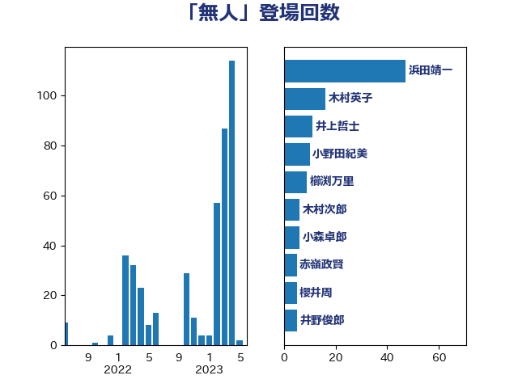

単語「無人」

| 岸信夫 | 自由民主党 | 28 回 |
| 柿沢未途 | 無所属 | 17 回 |
| 井上哲士 | 日本共産党 | 11 回 |
| 浅田均 | 日本維新の会 | 9 回 |
| 赤羽一嘉 | 公明党 | 5 回 |
| 武井俊輔 | 自由民主党 | 4 回 |
| 井上英孝 | 日本維新の会 | 3 回 |
| 国光あやの | 自由民主党 | 3 回 |
| 川合孝典 | 国民民主党 | 3 回 |
| 沢田良 | 日本維新の会 | 3 回 |
| 吉田宣弘 | 公明党 | 2 回 |
| 大島敦 | 立憲民主党 | 2 回 |
| 室井邦彦 | 日本維新の会 | 2 回 |
| 小山展弘 | 立憲民主党 | 2 回 |
| 岩谷良平 | 日本維新の会 | 2 回 |
| 杉本和巳 | 日本維新の会 | 2 回 |
| 森屋隆 | 立憲民主党 | 2 回 |
| 浜口誠 | 国民民主党 | 2 回 |
| 渡辺周 | 立憲民主党 | 2 回 |
| 片山さつき | 自由民主党 | 2 回 |
| 福島伸享 | 無所属 | 2 回 |
| 竹内真二 | 公明党 | 2 回 |
| 篠原豪 | 立憲民主党 | 2 回 |
| 道下大樹 | 立憲民主党 | 2 回 |
| 重徳和彦 | 立憲民主党 | 2 回 |
| 青山繁晴 | 自由民主党 | 2 回 |
| 青木愛 | 立憲民主党 | 2 回 |
| 高橋光男 | 公明党 | 2 回 |
| 高野光二郎 | 自由民主党 | 2 回 |
| 鬼木誠 | 立憲民主党 | 2 回 |
| あかま二郎 | 自由民主党 | 1 回 |
| 三浦信祐 | 公明党 | 1 回 |
| 中西祐介 | 自由民主党 | 1 回 |
| 住吉寛紀 | 日本維新の会 | 1 回 |
| 佐藤英道 | 公明党 | 1 回 |
| 国定勇人 | 自由民主党 | 1 回 |
| 國場幸之助 | 自由民主党 | 1 回 |
| 塩川鉄也 | 日本共産党 | 1 回 |
| 山下雄平 | 自由民主党 | 1 回 |
| 山口那津男 | 公明党 | 1 回 |
| 朝日健太郎 | 自由民主党 | 1 回 |
| 木村英子 | れいわ新選組 | 1 回 |
| 杉尾秀哉 | 立憲民主党 | 1 回 |
| 杉田水脈 | 自由民主党 | 1 回 |
| 松川るい | 自由民主党 | 1 回 |
| 浅野哲 | 国民民主党 | 1 回 |
| 玄葉光一郎 | 立憲民主党 | 1 回 |
| 田村智子 | 日本共産党 | 1 回 |
| 田村貴昭 | 日本共産党 | 1 回 |
| 紙智子 | 日本共産党 | 1 回 |
| 若宮健嗣 | 自由民主党 | 1 回 |
| 菅直人 | 立憲民主党 | 1 回 |
| 萩生田光一 | 自由民主党 | 1 回 |
| 西村康稔 | 自由民主党 | 1 回 |
| 赤嶺政賢 | 日本共産党 | 1 回 |
| 金子恭之 | 自由民主党 | 1 回 |
| 鈴木庸介 | 立憲民主党 | 1 回 |
| 阿部司 | 日本維新の会 | 1 回 |
| 阿部知子 | 立憲民主党 | 1 回 |
| 高木かおり | 日本維新の会 | 1 回 |